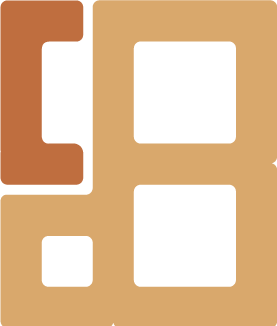
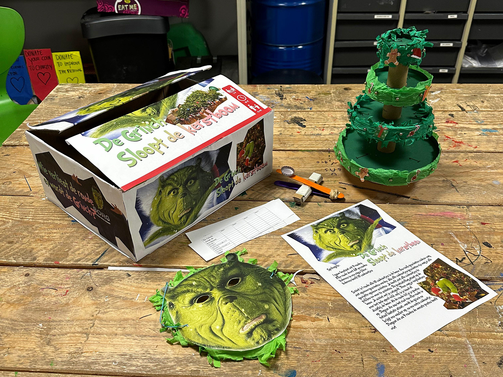
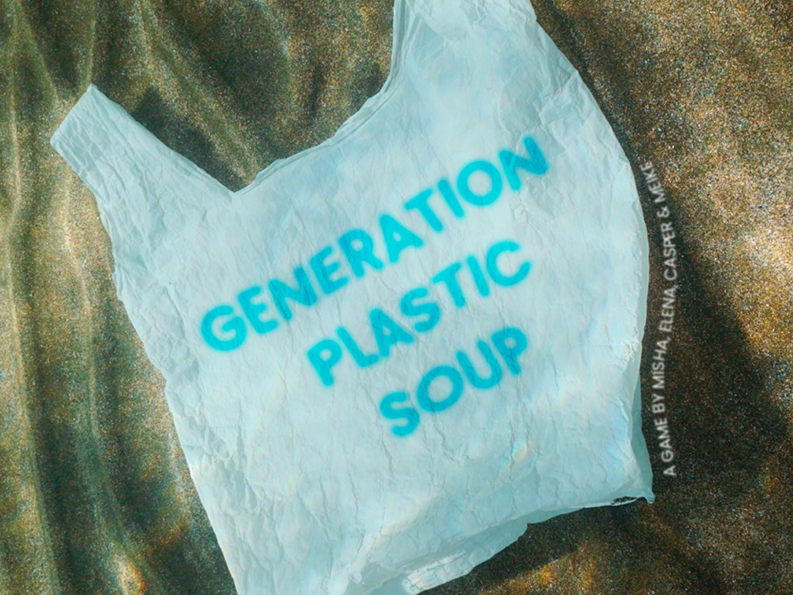

Craft // Woodworking
Poul Cadovius System
A custom modular wall unit study in birch multiplex and Scandinavian precision.
Born in '97. Delft-based maker. Studying CMD at Utrecht. I bridge the gap between sawdust-covered workshops and high-performance AI deployments.
My journey didn't start behind a screen, but in the workshop—surrounded by the smell of sawdust and the hum of electronics.
With a background rooted in professional woodworking, electrical engineering, and horticulture, I bring a "maker's mindset" to the digital world. Whether I’m hands-on with birch multiplex or deep-diving into my Linux AI Homelab, my goal remains the same: to create immersive experiences that pull people out of reality and into a story.
When I’m not designing, I’m organizing events for a 150+ member gaming community or experimenting with analogue crafts like screen-printing and goldsmithing. I believe that understanding the physical world makes me a better digital designer.

A filtered selection of 12 masterworks across physical and digital disciplines.
A custom modular wall unit study in birch multiplex and Scandinavian precision.

Floating seating system utilizing heavy-duty invisible joinery and smart integration.

A fully functional interactive installation bridging physical logic and code.

Developing a branding strategy for a creative hub that prioritizes community atmosphere.

One-week rapid iteration project: a chaotic tabletop game with physical catapults.

Exploring the tactile nature of ink through custom hand-pulled vector designs.

C# development and 3D asset modeling for a retro-scifi take on a classic mechanic.

A strategic card game designed during an EPIC-WE Jam to tackle sea level rise.
Nostalgic vector art reimagining gaming culture through clean modern lines.

Designing for intimacy: mapping user journeys for emotional and functional connection.
UX research and digital guidance conceptualization for students at HU Utrecht.

Modernizing analogue heritage through color theory and futuristic typography.
This portfolio isn't just a site; it's a node in my own creative ecosystem. Driven by a custom Linux-based AI Homelab, I use autonomous agents to prototype and construct my visions. In this lab, high-end craftsmanship meets the future of spatial computing.
Whether you have a question about a project or want to build something immersive together, my workshop door is always open.
[ HQ: DELFT, THE NETHERLANDS ]